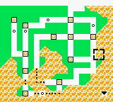

AreaDex/Y:254
0x1500 control code arbitrary code execution (Crystal) | Cart-swap arbitrary code execution | Generation I custom map script pointer | Generation I invalid meta-map scripts | Generation I item ("8F", "ws m", "-g m", "5かい", "てへ" etc.) | Generation I move ("-", "TM42") | Generation I Trainer escape glitch text boxes | Generation II bad clone | Generation II Burned Tower Silver | Japanese Crystal Pokémon Communication Center SRAM glitches | Coin Case glitch | Generation II glitch Pokédex sortings | Pikachu off-screen glitch ACE | OAM DMA hijacking | Pikachu glitch emote | Generation III glitch Pokémon summary | Generation III glitch move animation) | Remote code execution | TM/HMs outside of the TM/HM pocket | ZZAZZ glitch Trainer FC
[hr]
 No further extensions
No further extensions 
Cloning | Item duplication glitch (Generation I) | Pokémon merge glitch ("Q Glitch", Generation I) | Time Capsule exploit | Bug-Catching Contest data copy glitch (Generation II, Japan only) | Berry glitch | Battle Tower [email protected] glitch (Generation III) | (Mimic) Transform Rage glitch (Generation IV)
Transform held item glitch (Generation IV, Japan only) | Mimic glitch (Generation IV, Japan only)
[hr]
 Buffer overflow techniques
Buffer overflow techniques 
99 item stack glitch | LOL glitch | Rival LOL glitch | Instant LOL glitch | RAM LOL glitch | Out of bounds LOL glitch | blockoobLG | Instant encounter infinite chain glitch | LGFly | Super Glitch (Generation I) | Party remaining HP glitch | Super Glitch (Generation III) | Text pointer manipulation mart buffer overflow glitch | CoolTrainer♀-type move | Double distort CoolTrainer♀ corruption | Yami Shop glitch | Party Pokémon box data shift glitch | Unterminated name glitch item instant encounter (Japanese Red/Green)
[hr]
 Item stack duplication glitch (Generation I)
Item stack duplication glitch (Generation I) 
Generation I expanded items pack (Glitch Rocket HQ maps, Map FE (English and non-English European Yellow) | Map script pointer manipulation (arbitrary code execution | Map script pointer item ball manipulation) | Text pointer manipulation (arbitrary code execution | Item ball manipulation | Mart buffer overflow) | Trainerless instant encounter glitch
[hr]
 Bad clone glitch (Generation II)
Bad clone glitch (Generation II) 
????? party overloading (Type 0xD0 move glitch | ????? map corruption | Celebi trick | Celebi Egg trick | Shiny Celebi trick | Glitch move map corruption | Overloaded party map corruption | Glitch Unown (Glitch Unown map corruption) | Duplicate key items glitch (Infinite items and item creation, Expanded Balls pocket (Wrong pocket TM/HMs, Glitch Pokédex categories))
[hr]
 Closed menu Select glitches (Japanese Red/Green)
Closed menu Select glitches (Japanese Red/Green) 
Dokokashira door glitch (International) | Fossil conversion glitch (international) | Second type glitch | Skip to Level 100 glitch | Trainer mutation glitch | Walk through walls (International) | Lift glitch | Badge describer glitch
[hr]
 Pomeg glitch (Generation III)
Pomeg glitch (Generation III) 
Pomeg data corruption glitch ("Glitzer Popping") | Charm glitch
[hr]
 Voiding (Generation IV)
Voiding (Generation IV) 
Broken escalator glitch (Japan only) | Elite Four door glitch (Japan only)
[hr]
 2x2 block encounter glitches (Generation I)
2x2 block encounter glitches (Generation I) 
Left-facing shore tile glitch (in-game trade shore encounter trick, Old man trick, Trade link up shore encounter trick, Fight Safari Zone Pokémon trick) | Viridian Forest no encounter grass tiles glitch
[hr]
 Glitch City
Glitch City 
Safari Zone exit glitch | RAM manipulation | Out of bounds Glitch City (Generation II) | Slowpoke Well out of bounds corruption (French Gold/Silver/Crystal)
[hr]
 Large storage box byte shift glitch
Large storage box byte shift glitch 
Storage box remaining HP glitch | Generation I max stat trick
[hr]
 Pikachu off-screen glitch
Pikachu off-screen glitch 
[hr]
 SRAM glitches
SRAM glitches 
Generation I save corruption | 255 Pokémon glitch | Expanded party encounter table manipulation (Generation I) | Send party Pokémon to a new game (Generation I) | Generation II save corruption | Mailbox glitches | Mystery Gift item corruption | Trainer House glitches
Death-warp | Ditto trick | Experience underflow glitch | Mew trick | Text box ID matching | Meta-map script activation
[hr]
 Walk through walls
Walk through walls 
Ledge method | Museum guy method | Rival's effect | Select glitch method (International Select glitch method), Brock Through Walls
[hr]
 Surf down glitch
Surf down glitch 
Grass/rock Surfing glitch (Spanish/Italian only) (adaptions: Submerge glitch (international)) | 8 8 (0x7C) grass/rock surfing glitch (English Red/Blue))
| Town Map name: Blank name  Identifier (HEX) FE Identifier (DEC) 254 Default track Unknown Tileset Unknown Size Unknown Map type Redirection glitch map, Semi-freeze glitch map
|
More research is needed for this article.
| |

|
Reason given: An explanation of why things get corrupted and how would be great. Research more things that get messed up by the glitch. |
Map 0xFE from English Pokémon Yellow is a redirection glitch map and without proper set up, a freeze glitch map with an index number of 254 (FE).
When it is entered, it appears like a Glitch City. The appearance of this map may vary, for unknown reasons. The map's entrance point (which can be altered with the codes 01xxB4D3 01xxB0D3) apparently doesn't affect the appearance.
Entering map FE may result in a freeze due to its invalid level-script pointer (D36D-D36E), which is at DC0E in WRAM (12th stored Pokémon's experience byte 1).
It works almost the same in non-English European versions of Pokémon Yellow, although the level-script pointer is still DC0E, which would correspond with Pokémon 12's move 2 in those versions rather than Pokémon 12's experience byte 1.
Furthermore, Map FE in Japanese Yellow (another redirection glitch map) works significantly differently to the English and non-English European versions and has the same level-script pointer as other versions (DC0E).
Contents
Avoiding a freeze
Since DC0E is in WRAM, the player can easily hack in a C9 (ret) at DC0E using memory viewer to prevent map FE's freeze.
Furthermore, DC0E represents the 12th stored Pokémon in the current box's experience byte 1. While a current experience between 13172736-13238271 (C9 XX XX) is not viable, code like 00 00 C9 (an experience of 201) is. This means the player can simply place a Pokémon with 201 experience in the box as the 12th Pokémon to make map FE non-freezing. In this example, the 00s make the code fall through to the ret.
Effects of entering map FE
Entering map FE and avoiding the freeze has various side effects.
Easily noticeable effects
When the player enters map FE and avoids the freeze, the cycling music will play for a moment.
The player will be warped to map hex:99, which is a house in Fuchsia City with an NPC discussing the warden and two NPCs discussing Bill. Changing the value of D364 from FE (by tossing the quantity of item 36) to something else may be required to escape, otherwise the exit mats will take the player back to map FE.
The perpetual spinning effect will occur, with the effect of tiles having bits of arrow tiles on them.
The player's Pokédex will disappear, and the play time may become 255:59.
PC corruptions
- The Prof. Oak's PC and the Hall of Fame options for a PC may disappear.
- The player's stored PC items will become corrupted, and there may be more than 50 (the normal maximum amount of items) items stored.
- The current Pokémon Storage System box in use may change, and the Pokémon data within boxes may change, even for boxes that aren't currently in use.
Fly-able locations corruption
The player's available fly destinations bytes (D70A, D70B) get corrupted to 42 42; which may allow the player to view the names of, or fly to glitch destinations. Making the exit mat warp to Viridian City does not change the value of D70A and D70B, and when unchanged, glitch fly destinations are possible; however, going to a place like Cerulean City (which changes the fly bytes to 4A 42) lets the player keep glitch fly destinations too.
Map problems
For unknown reasons, the scripts IDs (not the level-script pointers) of certain maps become corrupted and will freeze the game, meaning it is seemingly impossible to visit places such as the Hall of Fame. Saving and resetting does not fix this problem.
At least through cheating, it is possible to load the Hall of Fame script without the 'walking up to Oak' process by manipulating a level-script pointer of 16:6456 into D36D/E (as 5664). This can be done in Route 6, which has the 16 bank and may not freeze the game initially. Watching the credits and resetting the game will not fix the freezing problem, however, and the player would be forced to view the credits every time they load the save due to the level-script pointer not changing.
Corruption of Pallet Town events
Regardless of the whether the events near the beginning of the game were completed or not:
Professor Oak will appear outside of Pallet Town one tile west and one tile north of the sign from the player character's house. This is like a side effect of the dokokashira door glitch, except for the fact that the position he appears in that glitch may be different. Talking to Professor Oak here makes him say "Hey! Wait! Don't go out!" and an exclamation mark to appear above the player character's head, as if the player stepped in to the grass at the beginning of the game with no Pokémon, however, apparently nothing else happens.
If the player goes into Daisy's (Blue's sister's house), there will be two of her. One will be at a chair facing the Town Map, and the other will be wandering around the house. Both of her can be talked to normally, but the Town Map cannot be obtained.
If the player enters Oak's lab, there will be another copy of Oak standing near the entrance. Talking to him brings up a "?" mark on the screen for unknown reasons. The position of the ? mark depends on which position that Oak was spoken to, with higher positions having the ? mark higher up.
The rival will be in the lab and will say "Heh, my POKéMON looks a lot stronger." and one of the Pokédexes will be gone.
Talking to the northern-most Oak can have one or more effects:
- If there is more than one Pokémon registered as 'own' in the Pokédex: The game makes it seems like he will rate the Pokédex as he says he will take a look at it, but the player has to talk to him again to have him rate it.
- If there are less than two Pokémon registered as 'own' in the Pokédex: Professor Oak will tell the player they should talk to Pikachu to see how it feels, even if they didn't obtain the ball.
There will be a ball with a Pikachu in it, and the player can obtain it, even if the player got Pikachu before. Trying to leave the lab causes the rival to go and battle you, but the 'battle' ends before it begins. When the rival is about to leave, the game will lock-up with the rival music playing.
Other effects
- Inability to battle/the game locking up before a Trainer battle until a save and reset is done.
- Corruption of a fossil in Cinnabar's Pokémon Lab.
- Corruption of the number of coins in the Coin Case.
- Two guards appearing outside the burgled Cerulean City house, with one of them blocking the door, and the other one tile right of the previously mentioned guard.
- The Rocket who stole the TM28 - Dig reappearing, and giving out the TM without a battle.
- Disappearance of a Pokémon in Day Care.
- Reappearance of the Rocket guarding the poster in Celadon Game Corner. They will battle (again).
How to enter it without a freeze
With a cheating device like GameShark, the player can go into a building, enter the codes 01FE64D3, 01C90EDC, then disable them. Afterwards, walking down where the exit mat is will take the player to map FE and trigger the non-freezing effect.
No cheats method
- Put a Pokémon with 201 or 51456-51711 experience in the 12th position of the current Pokémon storage box; as to make the map 'non-freezing'.
- Prepare Master Ball x254 (e.g. by encountering one fossil/ghost Missingno. to get 129, then by tossing 2 to get 127, then encountering it again).
- Expand the number of items, preferably with item underflow glitch.
- Go to one of the exit mat tiles in a place like a Pokémon Center, and swap the Master Ball x254 with item 36. Make sure it is the item '(glitchblock)x(glitchblock)(glitchblock)'. If it isn't, then go to the other tile. This is important because trying to swap the Master x254 with another Master Ball seemingly doesn't work.
- Go through the exit mat, and if everything worked, the player will be taken to map FE and the game won't freeze
Exploring Map 0xFE with arbitrary code execution
The warp to map 0x99 can be avoided by manipulating the right script at DC0E, in particular forcing the game to save will let you explore the map upon reset like with the following code which will bring up an invisible save menu, add the Pokédex option back, enable walk through walls and disable the perpetual spinning side effect that normally disables encounters:
ld b,04
ld h,61
ld l,95
call 3e84
ld a,01
ld (cd38),a
xor a
ld (d735),a
ld h,d3
ld l,6e
ldd (hl),a
ld a,7a
ld (hl),a
xor a
dec a
ld (d74a),a
ret
Memory editor code:
06 04 26 61 2E 95 CD 84 3E 3E 01 EA 38 CD AF EA 35 D7 26 D3 2E 6E 32 3E 7A 77 AF 3D EA 4A D7 C9
This code could in theory be represented with more viable storage box Pokémon (and possibly item data), but can be written with ws m (hex:63) using the Yellow port of [ https://forums.glitchcity.info/index.php?topic=7773.0 offgao's memory editor] (3831 changed to 381E from the Red/Blue version).
In order to set up the bytes for offgao's memory editor, you should be able to use the ChickasaurusGL's reusable RAM writer, but set up things so that the code at the end ends up at DA7F (ws m's initial location), possibly by writing most of the code, writing a jump to more code at DA7F (e.g. to Day Care Pokémon data), and in that code performing CopyData to move it to DA7F and finish the code.
In map 0xFE the Bicycle music continues to play. Its real theme may be a glitch song that freezes the game (confirmed but may not always happen) if you use the Bicycle and dismount, so you should avoid doing this.
In map 0xFE you can find the following Pokémon, glitch Pokémon and Trainers, so its fun to go hunting there.
| Land Pokémon | Surf Pokémon | Rods |
|---|---|---|
| Rival (sprite 1) (0xF1) | Lass (0xCB) | Magikarp Level 5 (Old Rod) |
| Scyther Level 218 | Jr. Trainer (0xCE) | Poliwag Level 10 (Good Rod) |
| ゥ ( Z4 Level 5 (0xC3) | Sabrina (0xF0) | Goldeen Level 10 (Good Rod) |
| Kangaskhan Level 66 | MissingNo. (0xAF) | |
| Bug Catcher (0xCA) | Voltob Level 76 | |
| Beauty (0xDA) | Sandshrew Level 33 | |
| Slowbro Level 46 | Fearow Level 28 | |
| X ゥ- xゥ, Level 234 | ||
| Growlithe Level 207 |
Different Pokémon may be found while Surfing, but it seems no Pokémon can be found with the Super Rod and Old Rod and Good Rood give Level 5 Magikarp, Level 10 Poliwag, Level 10 Goldeen. Interestingly you can get encounters out of the grass, which may mean the encounters in the map functions like a cave.
Whenever a battle finishes, the save prompt should be brought up again and you can save the game. You will be warped to map 0x99 but upon resetting you are able to explore map 0xFE again like when you first entered.
You are able to Fly away from map 0xFE, but it corrupts the Fly locations including a glitch option back to map 0xFE. Viewing the name of the glitch option can cause effects similar to Super Glitch, such as changing the palette of the screen, causing a battle with a ZZAZZ glitch Trainer or making the start menu and storage box menus invisible.
After you Fly away from map 0xFE, you should find that the 'meta-map scripts' of various locations like Celadon City and Hall of Fame were corrupted, and many can freeze the game.
In order to fix this, prepare the following code at D31D before the glitch, and then swap the Escape Rope x211 into item 41 to run the code as a custom map script.
ld hl, d5ef
ld bc, 007a
xor a
call 166e
ld h, d7
ld l, 0a
ld a,ff
ld (hli),a
ld (hl),a
ld a,c3
ld h,da
ld l,7f
ld (hli),a
ld a,21
ld (hli),a
ld a,d3
ld (hl),a
ret
Memory editor code:
21 EF D5 01 7A 00 AF CD 6E 16 26 D7 2E 0A 3E FF 22 77 3E C3 26 DA 2E 7F 22 3E 21 22 3E D3 77 C9 63 01 01 63 1E 63 1D D3
(63 01)
(01 63)
(1E 63)
(1D D3)
(Includes Master Balls and Repels for catching Pokémon you want in map 0xFE. The Repels are useful for catching Pokémon higher than the level of the first Pokémon in the party).
This calls the FillData routine to fill bytes D5EF to D668 with 00 and also fixes your Fly list to include all valid destinations and no glitch destinations.
For some reason using the code may remove the Pokédex option again. You can fix this with the following code at item 3 (as the code above makes ws m jump to item 3 after its data was corrupted, breaking the memory editor GUI) to patch D74A.
Lemonade x255
TM34 x74
TM15 x201
| |
See also
- 255 hours glitch - An effect caused by but not specific to map FE.